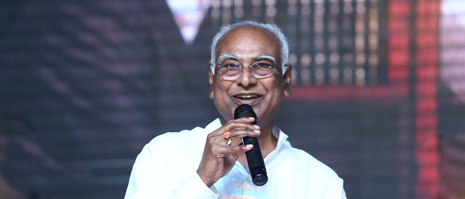
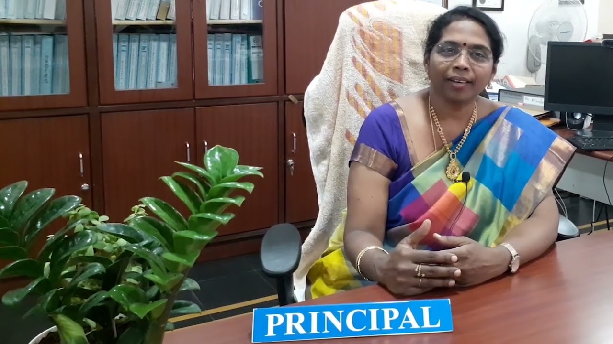
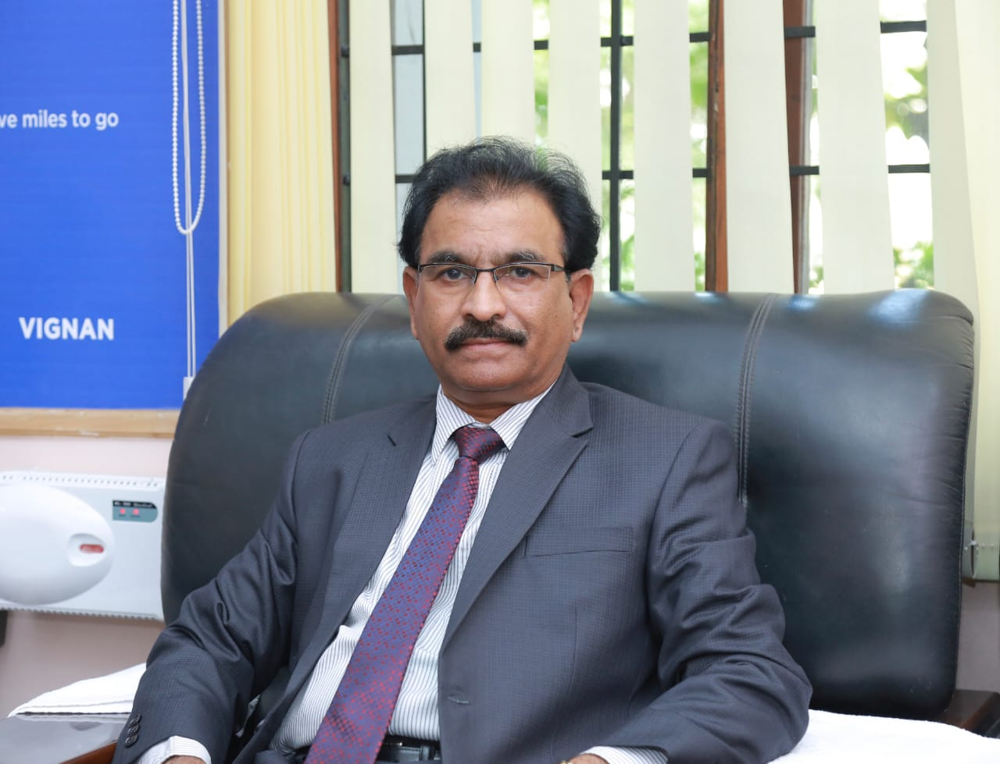

To evolve into a centre of excellence in Science & Technology through creative and innovative practices in teaching - learning, towards promoting academic achievement and research excellence to produce internationally accepted, competitive and world class professionals who are psychologically strong & emotionally balanced imbued with social consciousness & ethical values.
MISSION
To provide high quality academic programmes, training activities, research facilities and opportunities supported by continuous industry - institute interaction aimed at promoting employability, entrepreneurship, leadership and research aptitude among students and contribute to the economic and technological development of the region, state and nation.
CHAIRMAN

Others say the problem, We sought the problem
The difference between dreamers and innovators is that a dreamer just dreams and does nothing to realize it, while an innovator charts his own path and breathes life into his ideas. That streak of originality is the distinct quality that makes innovator a breed apart from the mere people of this world. Dr. L. Rathaiah, Chairman of Vignan group of institutions, was destined to be different, or should we say, he chose to be different. He was not content with just teaching. He spotted the chinks in the education system of the state and went about changing it to make it more effective, productive and powerful. He successfully altered the education scenario in A.P and brought about a socio-economic revolution of sorts. The education fraternity was so persuaded by the strength of this alternate model that they adopted the new system of imparting education without any reservation. The system initiated by this illustrious educationist, became instrumental in affecting a paradigm shift in the whole education scenario of the state. This novel model had the desired impact of enhancing the employability of the youth and shaping them into successful professionals capable of donning top leadership roles in their chosen field of interest.
" Today the state of A.P is an acknowledged hub for education. It has especially become famous for its technical education. Dr. Rathaiah has indeed set the benchmark in the field of higher education and been the guiding light for many others in the state. Truly, Dr. Lavu. Rathaiah , with his relentless efforts and dedication has changed the educational landscape of the state of Andhra Pradesh."
PRINCIPAL

We envision to be a recognized leader in technical education by creating competent and socially conscious technical manpower for the industrial requirement and the development of the nation. To achieve this vision, we launched undergraduate and post graduate engineering programs that nurture many vibrant and promising professionals equipped with skills to face the ever changing social, economical and technical landscape of our country.
At VIIT, we provide high-end education and research opportunities in new frontiers of engineering and technology with special focus towards skill, leadership & innovation. Students are provided with opportunities for interaction with the experts from the Industry through Guest Lectures, Industrial Visits, Vocational Training (internships), student chapters of International Professional bodies, sponsored projects, industrial trainings and participation in sports, cultural and other extra-curricular activities etc. We hope these activities encourage our students to embrace creativity and challenge them to come up with innovative ideas.
Success of any institution depends on its managerial practices, teaching staff and infrastructure. We have experienced and dedicated faculty, state-of- the-art infrastructure and laboratories. Spacious green campus, well ventilated spacious classrooms, a state-of-the-art computer center, digital library and peaceful atmosphere ensure a wonderful learning experience. We also believe in continuous professional development of our teachers and invest in upgrading their teaching as well as classroom management skills
RECTOR

The last two decades have seen a remarkable growth in higher education in India and across the globe. The move towards inter-disciplinary studies and interactive learning has not only opened up several options but also created multiple challenges. India is at a juncture where it envisions a crucial role in the global scenario which is possible only by enhancing the skill set of the budding engineers and turning them into competent professionals ready to take on the challenges of the world. With the tremendous growth of privatization of education in India on one hand and an increased number of youth opting for higher education on the other, the major focus is on creating a platform for quality in knowledge enhancement and bridging the gap between academia and industry.
To meet that all the programs offered by Vignan's Institute of Information Technology (VIIT) follow the Choice Based Credit System (CBCS) with Outcome Based Approach. The flexibility in the curriculum has been designed with industry-specific goals in mind and the educator enjoys complete freedom to appropriate the syllabus by incorporating the latest knowledge and to stimulate the creative minds of the students. VIIT has entered into collaboration with many prominent Industries to bridge the gap between Industry and Institute. Regular visits to Industries and mandatory internships with them have helped our students hone their technical skills in tune with the industry requirements.
With special focus on our Prime Minister's vision of Skill India, Make in India and Digital India, and a greater emphasis on Innovation, Research, Skill Development and Entrepreneurship, we at VIIT, have adopted some of the best practices in the region in tandem with the changing national and global trends in teaching and research.
We have been privileged to have a large pool of highly qualified faculty members who have been chosen for their strong passion for academics.